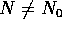
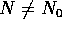
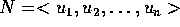
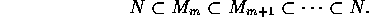
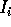
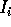
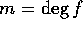

R-加群 M がネーター加群だとする。 を部分加群の列とすると、 の中に極大なもの が存在するから、。逆に、空でない部分加群の族 S に極大なものが無ければ、 を真に増大する鎖として取る。すると、 は S の中で極大ではないから、
を部分加群の列とすると、 の中に極大なもの が存在するから、。逆に、空でない部分加群の族 S に極大なものが無ければ、 を真に増大する鎖として取る。すると、 は S の中で極大ではないから、 となるものを含む、これを続けていくと、真に増大する部分加群の無限列がとれるので昇鎖律を満たさない。
アルチン加群であることと、降鎖律を満たすことが同値であることの証明も同様。
となるものを含む、これを続けていくと、真に増大する部分加群の無限列がとれるので昇鎖律を満たさない。
アルチン加群であることと、降鎖律を満たすことが同値であることの証明も同様。
N を M の部分 R-加群、S を N の R-部分加群で、R-有限生成なもの全体とする。仮定から、S に極大元  が存在する。 ならば、 とすると、
が存在する。 ならば、 とすると、 は、有限生成でかつ
は、有限生成でかつ  を真に含むことになり
を真に含むことになり  の極大性に反するから 、すなわち、N も有限生成である。
の極大性に反するから 、すなわち、N も有限生成である。
を M の部分加群の列とする。 は、R-加群だから、仮定より有限生成で、 となる生成元があり、N の仮定よりある にすべての が入る。従って、

よって、M は昇鎖律を満たす。命題  により M はネーター加群である。
により M はネーター加群である。
任意のイデアルは、1 個の元で生成されるから、明らか。
n=1 の時を示せばよい。I を  のイデアルとする。
のイデアルとする。
とおくと、これは R のイデアルである。また、 ならば、 だから、 である。仮定より、R はネーター環で、命題  より昇鎖律を満たすから となる r が存在する。命題
より昇鎖律を満たすから となる r が存在する。命題  により、各 は有限生成だから、 を  の R 上の生成元とする。 を最高次の係数が、 となるI の i 次多項式とする。このとき、これらが I を生成すること、すなわち次が成立することを示す。
により、各 は有限生成だから、 を  の R 上の生成元とする。 を最高次の係数が、 となるI の i 次多項式とする。このとき、これらが I を生成すること、すなわち次が成立することを示す。
とし、 に関する帰納法で示す。
m = 0 ならば、 だから、この場合は良い。
m>0 とする。r<m の時は、e = m-r、 の時は、e = 0 と置くことにすると、
だから、 とすると、
だから、帰納法により、 であることが分かった。
 の任意のイデアルが、有限生成だから、命題
の任意のイデアルが、有限生成だから、命題  より、
より、 はネーター環である。
はネーター環である。
ネーター加群の剰余加群はネーター加群であることは簡単に分かるから、ネーター環の剰余環はネーター環である。可換環 S が 可換環 R を部分環として含み、さらに  に対して、R と、
に対して、R と、 を含む S の部分環は、S であるとする。（このとき、 は、R-上 S を環として生成するという。例えば、
を含む S の部分環は、S であるとする。（このとき、 は、R-上 S を環として生成するという。例えば、 において、x は、
において、x は、 -上 を環として生成するが、
-上 を環として生成するが、 -加群としては、 すなわち 1次以下の多項式全体が生成されるものである。
-加群としては、 すなわち 1次以下の多項式全体が生成されるものである。
R を可換ネーター環とする。R-上有限生成な可換環は、R 上の多項式環の準同型像であるから、R 上の多項式環の剰余環と同型である。従って、ネーター環である。